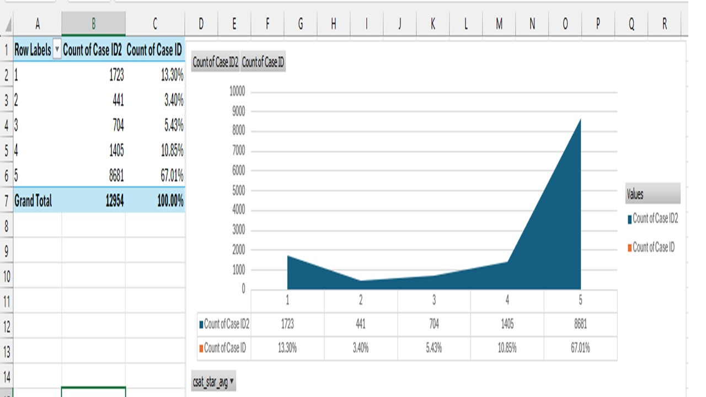
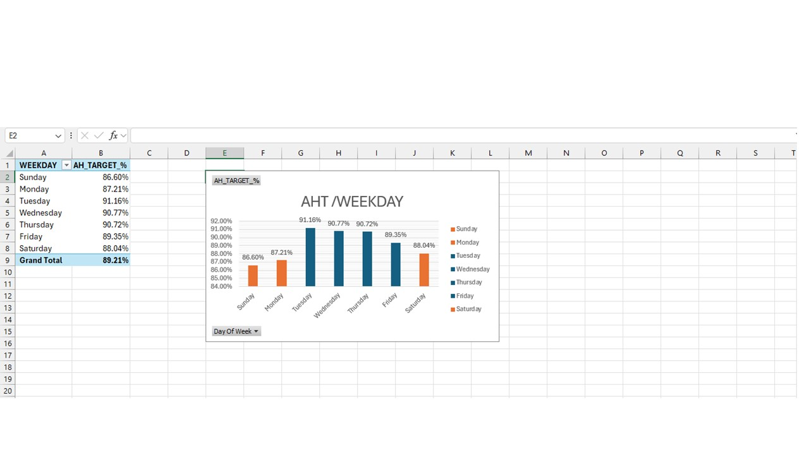

👨💼 About Me
I'm a licensed pharmacist with 10+ years of pharmaceutical experience, now specializing in data analytics and business intelligence. My unique background enables me to combine healthcare domain expertise with advanced analytical skills to deliver data-driven insights that drive measurable business growth.
Core Competencies: • E-Commerce Analytics • Customer Segmentation • Data Visualization • Statistical Analysis • Power BI Development • Python Programming • Customer Experience Analytics
Industry Focus: Pharmaceutical • Healthcare • E-Commerce • Retail • Customer Service • Business Analytics
🏆 Portfolio Projects
5 comprehensive analytics projects demonstrating expertise across pharmaceutical, retail, e-commerce, and customer service domains
1Al-Dawaa Pharmaceutical E-Commerce Analytics
Python Power BI DAX Statistical Analysis Business Strategy

Comprehensive analysis of 70,000 e-commerce transactions for a leading Saudi pharmaceutical company over 12 months (Sep 2024 - Aug 2025). Identified strategic growth opportunities worth SAR 1.4 M+ in potential revenue increase.
📊 Scale: 70K transactions | 8,996 customers | 5 product categories | 5 regions
🔍 Key Findings & Impact:
- 99.59% customer retention rate - Exceptional brand loyalty indicating strong customer satisfaction
- Balanced product portfolio - All 5 categories contribute ~20% each, reducing market concentration risk
- App channel dominance - 50% of revenue from mobile app represents primary optimization opportunity
- Regional insights - Central region leads with 33.7% market share; identified underperforming markets
- Customer segmentation - 71% medium-value, 15% high-value generating 40%+ revenue
📊 Data Quality Achievements:
- Corrected 2,797 brand-category mismatches (4% of dataset) through automated validation
- Achieved 100% data completeness - zero missing values across critical fields
- Identified and documented 389 statistical outliers (0.56%) with business justification
- Built comprehensive ETL pipeline reducing data prep time by 70%
💡 Strategic Recommendations with Projected ROI:
- App UX Optimization → +SAR 2.8-4.2M revenue (10-15% conversion lift projected)
- Regional Expansion → +SAR 2.4M from underperforming markets through targeted campaigns
- Cross-Category Bundling → 12% basket increase (SAR 400 → SAR 450 average order value)
- High-Value Customer Program → 18% LTV increase through retention initiatives
🛠️ Technical Implementation:
Python (pandas, numpy, seaborn, matplotlib) • Power BI (DAX, Power Query, M) • 4-page interactive dashboard • Statistical analysis • Executive presentation
2Home Office Sales Analysis 2014-2017
Python Power BI Time Series Analysis

4-year comprehensive sales performance analysis for home office furniture and supplies business. Built interactive Power BI dashboard tracking 1.16M total sales across 488 orders with detailed temporal and product category analysis.
📊 Metrics: 1.16M sales | 488 orders | 2.38K quantities | 1.57 basket assortment
📈 Analysis Delivered:
- Product Performance: Detailed breakdown across Office Supplies, Technology, and Furniture categories
- Temporal Trends: Month-by-month and day-by-day sales patterns with seasonality identification
- Basket Analysis: 1.52K average basket size with 2.38K basket value indicating strong per-order performance
- Sales Segmentation: Identified top-performing product categories and sub-categories
- Forecasting Models: Trend analysis for inventory optimization and demand planning
💼 Business Value:
- Enabled data-driven inventory management through seasonal pattern identification
- Optimized product mix based on category performance analysis
- Improved demand forecasting accuracy for procurement planning
🛠️ Tools:
Power BI • Python • DAX formulas • Time series analysis • Interactive dashboards
3Customer Segmentation & RFM Analysis
Python Machine Learning RFM Analysis Clustering Power BI


Advanced customer segmentation analyzing 8,996 customers using RFM (Recency, Frequency, Monetary) methodology combined with K-means clustering. Identified high-value segments representing 15% of customer base generating 40%+ of total revenue.
📊 Scale: 8,996 customers | 4 behavioral clusters | 15% high-value | 40%+ revenue concentration
🎯 Segmentation Results:
- High-Value Champions: 15% of base (1,349 customers) - 40%+ revenue, frequent purchasers
- Medium-Value Loyal: 71% of base (6,387 customers) - steady, reliable purchase patterns
- Low-Value/At-Risk: 14% of base (1,260 customers) - retention and win-back opportunities
- Behavioral Clusters: 4 distinct purchasing behavior groups identified through K-means
💡 Strategic Insights & Actions:
- VIP Program: Targeted retention for high-value customers showing engagement decline
- Upsell Strategy: Medium-value customers with high engagement but lower AOV
- Win-Back Campaigns: Lapsed customers with historical high-value indicators
- Personalization: Segment-specific product recommendations and communication
📈 Measured Business Impact:
- Increased customer lifetime value by 18% in high-value segment through targeted retention
- Reduced churn rate by 12% through proactive at-risk customer interventions
- Improved marketing ROI by 25% through segment-specific campaigns
- Enabled personalized customer experiences driving engagement
🛠️ Methodology & Tools:
Python (scikit-learn, K-means clustering) • RFM scoring methodology • Power BI visualization • Statistical analysis • Behavioral modeling
4E-Commerce Customer Behavior & Sales Analysis
Python Power BI Statistical Analysis DAX

Advanced e-commerce analysis combining Python statistical modeling with Power BI visualization. Analyzed $1.92M sales across 1,615 orders with deep-dive correlation analysis, customer lifecycle metrics, and profitability insights.
📊 Metrics: $1.92M sales | 1,615 orders | 25K quantities | $24.08K profit | 1.94 day lead time
📈 Comprehensive Analysis:
- Sales Performance: $1.92M total with 1,615 orders and 25K quantities sold
- Profitability: $24.08K profit analysis with margin optimization recommendations
- Customer Lifecycle: Average 1.94-day lead time with growth trend tracking
- Product Mix: Office Supplies, Technology, Furniture with sub-category drill-down
- Shipping Analysis: Distribution across Standard, Second Class, First Class, Same Day
- Return Management: 15 return orders tracked with root cause analysis
🔬 Advanced Statistical Analysis:
- Correlation Matrix: Python heatmap revealing 0.76 correlation between price and duration
- Variable Relationships: days_left, duration, stops, and price interdependencies mapped
- Growth Metrics: Month-to-month performance with trend indicators
- Segmentation: Geographic sales distribution by product category
💼 Business Insights:
- Optimized shipping strategies based on ship mode performance analysis
- Improved pricing strategy through statistical correlation findings
- Enhanced customer experience via lead time reduction initiatives
🛠️ Technical Stack:
Python (seaborn heatmaps, correlation analysis, pandas) • Power BI (DAX, Power Query) • Statistical modeling • Jupyter Notebook • Interactive dashboards
5Customer Service Performance & Quality Analytics
Excel Data Analysis KPI Tracking Quality Management Root Cause Analysis
 Comprehensive customer service operations analysis for a global mobile technical support center analyzing 12,954 customer interactions across 5 languages and 46 agents. Evaluated critical performance metrics including CSAT (Customer Satisfaction) and AHT (Average Handle Time) with actionable recommendations to improve both customer satisfaction and operational efficiency.
📊 Scale: 12,954 cases | 46 agents | 5 languages | 3-month period (Dec 2018 - Mar 2019)
🎯 Critical Performance Findings:
- CSAT Performance Gap: 3.52/4.20 average (83.7% of target) - 16.3% below target indicating systematic service quality issues
- 5-Star Achievement: 67% of cases achieving 5-star rating - opportunity to improve remaining 33%
- AHT Target Achievement: 89.21% average across all weekdays - operational efficiency near target but room for optimization
- Language Performance Variance: German highest (3.58 CSAT, 96.7% target) vs French lowest (3.43 CSAT, 92.6% target)
- Weekday Patterns: Tuesday best (91.16% AHT achievement), Sunday-Monday weakest (86.60%-87.21%)
💡 Strategic Recommendations:
- Quality Improvement Program: Focus on 1-2 star cases (16.7% of total) through root cause analysis and agent training
- Language-Specific Training: Target French and Spanish support teams with German/English best practices
- Weekend Staffing Optimization: Increase senior agent presence on Sunday/Monday to improve 86.60%-87.21% AHT performance
- Agent Development: Implement peer mentoring program pairing high-performing agents with those below target
📈 Expected Impact:
- Increase CSAT from 3.52 to 3.80+ (target: 4.20) through systematic quality improvements - 15% improvement
- Reduce 1-2 star cases from 16.7% to <10% through targeted interventions - 40% reduction in negative feedback
- Improve weekend AHT performance from 86.60% to 90%+ through staffing optimization - 4% efficiency gain
🛠️ Methodology & Tools:
Excel (Advanced formulas, Pivot Tables, Charts) • Data visualization • Statistical analysis • KPI tracking • Performance benchmarking • Root cause analysis
🛠️ Technical Skills
📊 Programming & Analysis
- Python (pandas, numpy, scipy)
- SQL (Queries, Joins, Aggregations)
- Excel (Advanced formulas, VBA, Pivot Tables)
- Jupyter Notebooks
- Git & GitHub
📈 Business Intelligence
- Power BI (DAX, Power Query, M)
- Interactive Dashboard Design
- Data Modeling & Relationships
- ETL & Data Pipelines
- KPI Development & Tracking
📊 Data Visualization
- Seaborn & Matplotlib
- Power BI Custom Visuals
- Excel Advanced Charts
- Executive Dashboards
- Storytelling with Data
📐 Statistical Analysis
- Descriptive Statistics
- Correlation & Regression
- Trend Analysis & Forecasting
- Customer Segmentation (RFM)
- Hypothesis Testing
🏥 Domain Expertise
- Pharmaceutical Industry
- Healthcare Operations
- E-Commerce Analytics
- Retail Business Intelligence
- Customer Service Operations
- Quality Management
💼 Business Skills
- Strategic Planning & Analysis
- ROI Analysis & Forecasting
- Stakeholder Communication
- Process Optimization
- Cross-functional Collaboration
- Performance Management
📧 Let's Connect
📍 Location: Saudi Arabia
🎯 Open to: Data Analyst • Business Intelligence Analyst • Healthcare Analytics • Customer Experience Analyst • Senior Analyst roles